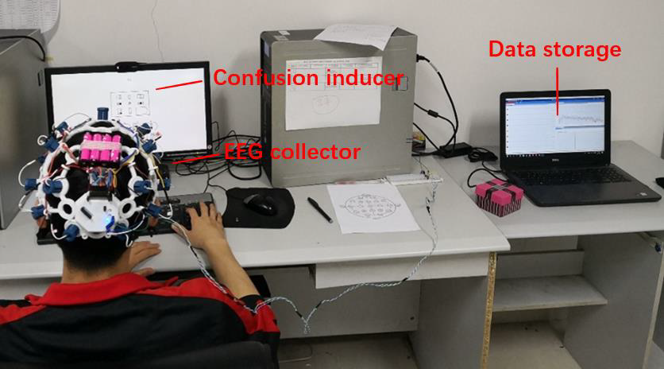

abstract
We present a database for research on affect, personality traits and mood by means of
neuro-physiological signals. Different to other databases, we elicited affect using both short and long
videos in two configurations, one with individual viewers and one with groups of viewers. The database
allows the multimodal study of the affective responses of individuals in relation to their personality
and mood, and the analysis of how these responses are affected by (i) the individual/group
configuration, and (ii) the duration of the videos (short vs long). The data is collected in two
experimental settings. In the first one, 40 participants watched 16 short emotional videos while they
were alone. In the second one, the same participants watched 4 long videos, some of them alone and the
rest in groups. In both settings, the participants' signals, namely, Electroencephalogram (EEG),
Electrocardiogram (ECG), and Galvanic Skin Response (GSR), were recorded using wearable sensors.
Frontal, full-body and depth videos were also recorded. Participants have been profiled for personality
using the Big-five personality traits, and for mood with the baseline Positive Affect and Negative
Affect Schedules. Participants emotions have been annotated with both, self-assessment of affective
levels (valence, arousal, control, familiarity, like/dislike, and selection of basic emotion) felt by
the participants during the first experiment, and external-assessment of participants' levels of valence
and arousal for both experiments. We present a detailed correlation analysis that includes correlations
between self-assessment and external-assessment of affect, between valence and arousal elicited by short
and long videos on individuals and groups, as well as, between personality, mood, social context, and
affect dimensions. We also present baseline methods and results for single-trial classification of
valence and arousal, and for single-trial classification of personality traits, mood and social context
(alone vs group), using EEG, GSR and ECG and fusion of modalities for both experiments.
The database has been made publicly available. The dataset was first presented in the following paper:
"AMIGOS: A Dataset for Affect, Personality and Mood Research on Individuals and Groups (PDF)", J.A.
Miranda-Correa, M.K. Abadi, N. Sebe, and I. Patras, IEEE Transactions on Affective Computing, 2018.
how to use
If you are interested in using this dataset, you will have to print, sign and scan an EULA (End User
License Agreement) and upload it via the dataset request form. We will then supply you with a username
and password to download the data. Please head on over to the downloads page for more details.
Also, please consult the dataset description page for a complete explanation of the dataset.
credits
First and foremost we'd like to thank the 40 participants in this study for having the patience and
goodwill to let us record their data.
This dataset was collected by:
Juan Abdon Miranda Correa, Queen Mary University of London, United Kingdom
Mojtaba Khomami Abadi, University of Trento, Italy
All this work has been guided by our supervisors:
Dr. Ioannis Patras, Queen Mary University of London, United Kingdom
Dr. Nicu Sebe, University of Trento, Italy
Finally, we'd like to thank our funding bodies:
Consejo Nacional de Ciencia y Tecnología, Mexico. Scholarship number 359169.